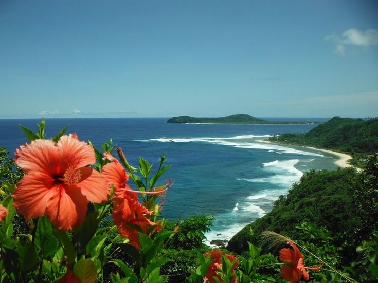

Welcome to Laie
Laie is a beautiful town on the North Shore of Oahu, Hawaii. It is home to BYU-Hawaii, the Laie Temple, stunning beaches, and a rich Polynesian culture. This photo tour explores places that make Laie special for students, residents, and visitors.
Tour Stops
-
📍Laie Hawaii Temple
📍Brigham Young University-Hawaii
📍Sam Store
📍Foodland Laie
📍Laie Point
📍Polynesian Cultural Center